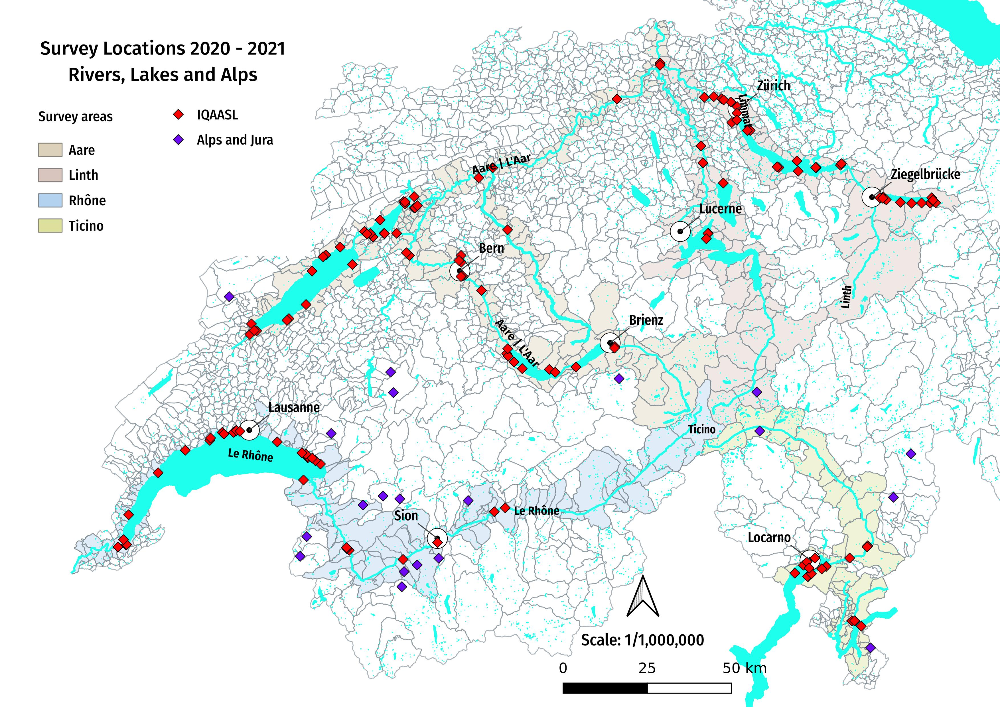

Assessing land-use influence on macrolitter abundance in freshwater systems#
Notes and calculations for the manuscript Near or Far: Revealing the role of land-use on macrolitter distribution in Swiss freshwater
ver=0.01
Suvey locations April - August 2021 source: IQAASL
{kind=link}
Abstract#
Rivers are often considered conduits for macrolitter pollution into the sea. However, freshwater ecosystems are also themselves highly exposed to macrolitter detrimental effects, such as ingestion by local fauna. Long-term and large-scale assessments on macrolitter on riverbanks and lake shores can provide an understanding of litter presence in freshwater systems, notably in terms of abundance, composition and origin of items.
Purpose#
This document details the methods used for the land use chapter of the IQAASL report and expands the analysis to include distance to river intersections and length of river network. The environmental conditions are approximated by calculating the land-use conditions within a buffer of r=1’500 m around each survey location. The data is extracted from swissTLMRegio using the predefined land use categories in the corresponding vector layers. In section 4 the measured distance from a survey location to any river intersections within the buffer is measured as well as the total length of any intersecting rivers in the buffer. In section five the land-use is calculated with a hexagon shaped buffer (as opposed to circular buffer), and the most recent publicly available map layers are substitued for the previous versions used in the first three sections. The purpose can be summarized as follows:
review the previous analysis
add to the previous analysis by selecting objects based on abundance or frequency
determine if length and distance to river intersection is a better indicator of pollution source than just the number of intersections
quantify the analysis in terms of number of objects accounted for
update the inferences using the new map layers
consider the probability of finding an object in relation to Spearmans \(\rho\)
Introduction#
To better control (eliminate) trash in the environment it is essential that the limited resources that are attributed to this domain be used as efficiently as possible. Correctly identifying zones of accumulation and or the objects that are accumulating in the watershed would enable more coordinated and precise actions between stakeholders. The process of identification needs to fulfill certain operating requirements to be effective:
accurate
repeatable
scale-able (up and down)
Beach-litter data is count data. Gathered by volunteers following a protocol, the data is highly variable for many reasons. In most studies the median is less than the mean and in the case of the data for this study, the standard deviation is greater than the mean. Statistical tests dependent on linear relationships may not be appropriate, the guide from the JRC suggests using a Negative binomial distribution for modeling extreme events. Spearman’s ρ does not require that the two variables be continuous, nor is there an assumption of normality. The test is included in most standard computing libraries and spreadsheets, the process is easy to automate and integrate. Spearman’s ρ or Spearman’s rank correlation coefficient is a non parametric test of rank correlation between two variables. Spearmans ρ defines the magnitude (how much it approaches linear) of monotonic relationships and the direction. When ρ is 0 there is no evidence of a monotonic relationship. Values of 1 and -1 signify a perfect monotonic relationship between two variables.
The hypothesis of ρ#
\(H_{0}\): There is no monotonic association between the two variables
Statistical significance is defined as a very unlikely outcome under the null hypothesis, for this report unlikely is defined as less than 5% chance or p < 0.05 that the null hypotheses will be rejected even though it is true. Spearmans ρ is implemented using SciPy on Jupyter Lab
The data is beach litter data collected during a national survey of lakes and rivers in Switzerland, IQAASL. Standard MSFD/OSPAR protocols were followed within geographic limitations.
Using ρ
Land use data for each survey location was collected by creating buffer-zones around each survey location at radiuses from 1.5 - 5km and 10km and sectioning layers of the Swiss Statistical Survey, the complete process is defined here The land use profile.
The land use is designated For every 100m² of the country using satellite images. There are 27 different possible categories for each 100m², a buffer zone with radius of 1500m has an area ( \(\pi r^{2}\) ) of 7,068,583m² or \(\approxeq\) 700 100m squares. In Switzerland the width of the lake shore is fairly small, a survey of 100m x 50m would be considered fairly large. For the data in this report the median survey length was 52 meters.
However, there are over three hundred samples in the data set. Each sample has between zero and 100 different objects, each object has its own count. In total there were over 50,000 items collected, identified and counted in the 12 month period. Each sample is recorded as pieces of trash per meter and quantity.
Esitmating landuse#
Once the data is exported from the maplayer the features were grouped by use. For example all types of buildings were grouped together, the different aggricultural uses were grouped together as well as woodlands and water features.
Estimating the road and river network#
The values for the road and river network with a given radius are defined separately. The road network is the sum of the lengths of all roads, footpaths, freeways and forest roads within the area of interest. Note that the area attributed to roads given by the default map layer does not provide the same value. This is because of the way land use is estimated for each 100 m square. For example, if the center of a 100 m square has a road in it then the entire 100² m is attributed to the category roads (or railways). As a result only a portion of the road network is accounted for.
To calculate the road network another map layer is used. The polylines for the roads are disolved into a single line, and the length of that line (divided by 1000) is the number of kilometers of road network for the area in question.
The river network considers the length, class and size of rivers associated with a survey location.
The calculations are the same at each Geographic level. The number of samples and the mix of land-use attributes changes with every subset of data. It is those changes and how they relate to the magnitude of trash encountered at a location that concerns these inquiries. This document assumes the reader knows what beach-litter monitoring is and how it applies to the health of the environment.
A statistical test is not a replacement for common sense. It is an another piece of evidence to consider along with the results from previous studies, the researchers personal experience as well as the history of the problem within the geographic constraints of the data.
Authors: Louise Schreyers, Roger Erismann, Bhavish Patel, Montserrat Filella, Christian Ludwig
For information regarding the contents of this document conatact analyst@hammerdirt.ch